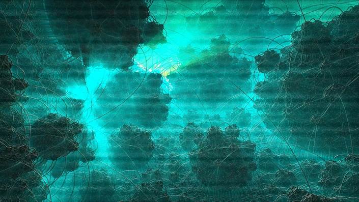

Worthy winner of the PC 4kB intro competition at Revision 2012 and latest example of the compact-coding tradition exercised within the demoscene, Hartverdrahtet by Akronyme Analogiker is a three minute long audio-visual trip into a procedural fractalverse, compressed into a minuscule piece of software. No bigger than 4069 bytes – less than an empty Word document, as demoscene activists like to point out – the executable file contains all the mathematics needed to generate the unfolding visual complexity and audible ambience upon a double-click. A solo effort by a talented coder who calls himself Demoscene Passivist, Hartverdrahtet reveals a mesmerizing cosmos observed through what could be an electron microscope – ethereal, greenish and a little eerie.
The real magic is in the lingo: “It’s a mix of shere-tracing, fake ambient occlusion and a lot of post-processing. And it took me nearly two months to complete it,” the programmer and recipient of last year’s ‘Echtzeit Newcomer Award‘ reveals on his Tumblr. “The shader basically encapsulates a sphere-tracing based raymarcher for a single fractal formula with camera handling. An extra post-processing shader adds effects like god-rays, tv-lines and noise to make the result look more interesting and less ‘sterile’. The different intro parts are all parameter and camera position variations of the same fractal.”
[…]
Hartverdrahtet – Infinite complexity in 4096 Kilobytes
És itt a lényeg, a teljes videó.
Elképesztő!